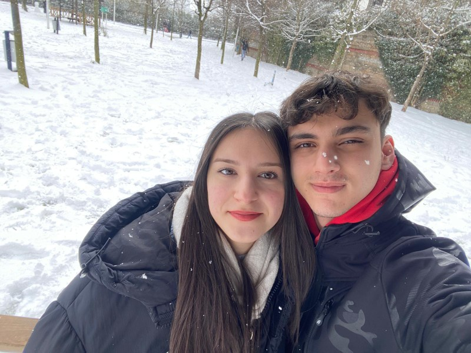

Bu site Eray'dan Fıstık'a...
Fıstık ile Eray'ın Hikayesi
Bu sadece bir aşk hikayesi değil... Bu, her şeyin başladığı o güzel anların hikayesi.
İlk Buluştuğumuz Yer
O gün, o yerde kalbim nasıl atıyordu bir bilsen... Her şeyin başlangıcıydı orası. Hatırlıyor musun, neresiydi?(yalan yok latte soğuk olunca iğrenç olmuştu)
Bu site, bir özür değil… bir hatırlatma. Ne kadar güzel olduğumuzu unutma diye.